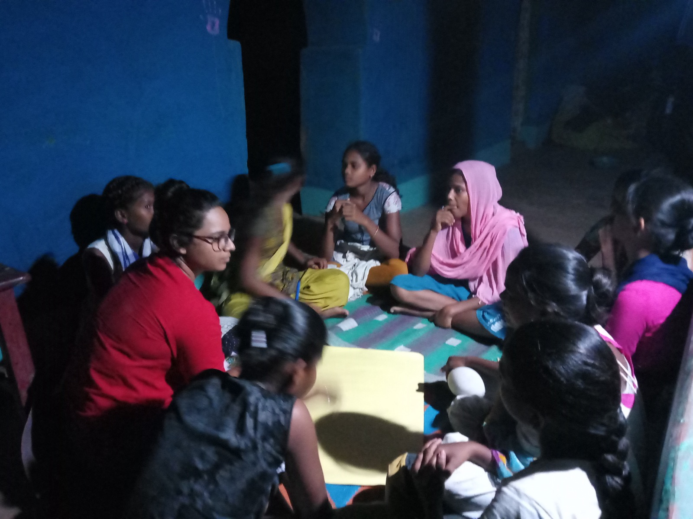

Indigeneity: Culture, Nature & Youth
Ways of Seeing — An Indigenous Media Archive
Indigeneity and Culture
This section brings together projects and conversations around Indigenous cultural practices and questions of representation, looking at works with community-curated production processes.
- Akhra, Ranchi — For culture & communication. Akhra is a group of committed persons, mostly Indigenous youth, working in the field of culture, communication, and human rights issues of Indigenous (tribal) peoples in India generally, and Jharkhand particularly. Over the last 20 years, Akhra has produced more than 30 documentary films, many of which have received national and international recognition.
- Ektara Collective — For films. Ektara Collective is an independent, autonomous, non-funded group of people who combine creative efforts and imagination, collaborating with trained and untrained people to make films that are content-wise and aesthetically located in their own realities and experiences. Ektara has made and produced two short fiction films and a full-length feature film, and also makes music videos and dubs films into Hindi.
- CGNet Swara — A project on citizen journalism.
- Centre for Development Practice — Rural India Initiative.
- Sahapedia — A web-based resource on the cultural history of India, built on co-creation between scholars, practitioners, and community, producing knowledge and making it accessible to all.
Indigeneity and Nature
There is a particular role that ecology plays within Indigenous life-worlds, and in how the human–nature relationship is imagined. This section brings together conversations looking at how land and ecology play a critical role for Indigeneity.
- Ayang Raji — Adivasi and food. (See also: Ayangraji on this site’s Making page.)
- Adivasi Drishyam — Why Indigeneity matters.
Indigeneity and Youth
The role of young people from Indigenous communities is significant and critical to any alternative imagination of creative possibilities in framing debates and conversations around Indigeneity. This section foregrounds projects and conversations either created by young people, or in which young people are central stakeholders.

- Chinhari: The Young India — chinhari.co.in. (See also: Chinhari: The Young India on this site’s Making page.)
- Sinchan — A world with diverse ways of living, learning, and earning. sinchan.co.in